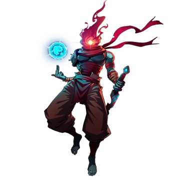

◈ GUEST · DEAD CELLS CROSSOVER
The Beheaded
BlazBlue: Entropy Effect — Гостевой Персонаж
80
Атака
60
Защита
75
Скорость
80
HP
★★★
Сложность
Универсал
Тип боя
The Beheaded — второй коллаборационный персонаж BlazBlue Entropy Effect, пришедший из популярного action-roguelike Dead Cells. Он обладает чрезвычайно разнообразным арсеналом, разделённым на три рюкзака с оружием и навыками. The Beheaded способен сражаться на любой дистанции, переключаясь между билдами на лету. Его уникальная механика — критические удары, которые наносят на 50% больше урона. Освоение условий для критических ударов и управление рюкзаками — ключ к раскрытию его потенциала.
Backpack System
Critical Hits
27 Weapons

01
Досье персонажа
Имя
The Beheaded (Обезглавленный)
Происхождение
Dead Cells (Motion Twin / Evil Empire)
Оружие
27 видов оружия, навыков и мутаций
База HP / Атака
~1000 / ~150 (33 потенциала, +660%)
Роль
Универсал / Мастер на все руки
Особенность
Система рюкзаков, критические удары
Боевые характеристики
ATK80
DEF60
SPD75
HP80
RANGE85
SKILL90
Талант (Talent)
Tactical Healing
Восстанавливает HP при нанесении урона врагам вскоре после получения урона. Позволяет играть более агрессивно, так как вы можете восстановить здоровье, атакуя в ответ на полученный урон.
Восстанавливает HP при нанесении урона врагам вскоре после получения урона. Позволяет играть более агрессивно, так как вы можете восстановить здоровье, атакуя в ответ на полученный урон.
02
Навыки и приёмы
Wolf Trap
Legacy Skill 1
Бросает волчью ловушку, которая обездвиживает врагов на несколько секунд.
Количество ловушек и длительность обездвиживания растут с уровнем.
Позволяет запереть врага для безопасной атаки.
Cocoon
Legacy Skill 2
Входит в блокирующую стойку. Успешный блок даёт 3 секунды неуязвимости и
сбрасывает кулдаун. Длительность неуязвимости растёт с уровнем.
Один из лучших парирований в игре — позволяет полностью игнорировать урон.
Frantic Sword (Backpack I)
Оружие ближнего боя
5-ударное комбо мечом. Критические удары при HP ниже 50% или активном Tactical Healing.
Усиления: Poison Flame Strike (яд/ожог), Assassin's Dagger (разворот врагов, криты со спины),
Parrying Blade (супер-броня, блок, криты по боссам), Blitz Slash (дальний разрез с критом).
Quick Bow (Backpack I)
Оружие дальнего боя
Быстрая стрельба из лука. Усиления: Ice Bow (холод/заморозка), Infantry Bow (ближний бой),
Heavy Crossbow (обездвиживающая стрела + шквал). Криты при 3+ стрелах во враге или HP < 50%.
Rampart (Backpack I)
Щит
Поднимает щит и наносит удар. Успешный блок усиливает удар и даёт неуязвимость.
Усиления: Total Defense (блок сзади), полная невосприимчивость к урону при трате MP.
После блока все оружия гарантированно критуют.
Infantry Grenade (Skill Backpack I)
Навык
Бросает гранату, наносящую урон по области (MP:50). Усиления: кассетная граната,
увеличенный взрыв, наложение Freeze/Blind/Immobilize.
Double Crossb-o-matic (Skill Backpack I)
Навык
Устанавливает турель с арбалетом, стреляющую по врагам (MP:100). Усиления: реген SP,
урон ядом, увеличенная скорострельность.
Rapier (Backpack II)
Оружие
Рапира с рывком и заряжаемым выпадом. Криты по врагам с Abnormal Status.
Rift Rapier: блокирует урон при ударе, криты после блока.
Nether Souls Slash: генерирует души, которые можно запустить во врагов.
Magic Missiles (Backpack II)
Оружие
Выпускает 5 самонаводящихся снарядов. Усиления: Pyrotechnics (огненный снаряд),
Frost Blast (ледяная волна/лазер), увеличенная дальность отслеживания.
Broadsword (Backpack II)
Оружие
Четыре мощных удара с супер-бронёй. Срыв вражеской супер-брони даёт криты.
Усиления: Flint (ударная волна с критом), Blade Whip (хлыст с критом).
Serenade (Skill Backpack II)
Навык
Призывает фамильяра Serenade, который атакует врагов, накладывая метки (MP:15).
Метки A и B: при наложении противоположной метки — крит. Усиления: фамильяр атакует быстрее,
усиление от killstreak (урон, пробивание брони, мечевые волны).
Wings of the Crow (Skill Backpack II)
Навык
Призывает грозовое облако, левитируя на нём и поражая врагов внизу молниями (MP:50).
Усиления: свободное движение, вихрь (притягивание), паралич после 10 ударов.
Vorpan (Backpack III)
Оружие
Быстрые удары сковородой (до 10 раз). Криты по врагам, стоящим лицом.
Усиления: Flashing Fans (веера, отражение снарядов), Iron Staff (посох, супер-броня, блок),
Panchaku (нунчаки из сковород, блок и контратака).
Symmetrical Lance (Backpack III)
Оружие
Копьё с супер-бронёй. Криты при killstreak >= 2. Усиления: War Javelin (телепорт к копью),
War Spear (криты при попадании по нескольким врагам), Fierce Lance Charge (заряжаемый выпад).
Electric Whip (Backpack III)
Оружие
Электрический хлыст, поражающий самого дальнего врага. Усиления: Wrenching Whip (притягивание),
Wrecking Ball (шар на цепи, супер-броня).
Collector's Injector (Skill Backpack III)
Навык
Вращение с инжектором, наносящее урон и дающее супер-броню (MP:200). Можно потратить AP
для увеличения урона и длительности. Усиления: срыв брони, яд, увеличенный радиус.
Phaser (Skill Backpack III)
Навык
Телепорт за спину ближайшего врага с обездвиживанием (MP:10). Усиления: урон,
возврат в исходную позицию, неуязвимость во время телепорта.
03
Основные механики
Backpack System — три билда в одном
The Beheaded имеет три рюкзака с оружием и навыками, между которыми можно переключаться на лету.
Изначально доступен только Backpack I. Чтобы разблокировать Backpack II, III, мутации и
универсальные улучшения, необходимо получить потенциал "Enhances Starting Weapons" в Weapon Backpack I.
Без него вы ограничены только четверным прыжком и тройным рывком. Приоритетное получение этого
потенциала открывает весь арсенал The Beheaded и позволяет адаптироваться к любой ситуации.
Critical Hits
Уникальная механика урона: критические удары наносят на 50% больше урона.
Enhanced Critical Hits — +100% урона (через скрытые эффекты). Devastating Critical Hits —
огромный урон (только с Dark Potion, риск мгновенного поражения).
Abnormal State
Враги считаются в "Abnormal State", если на них наложен любой дебафф: Cold, Freeze, Lightning,
Paralyze, Rend, Burn, Poison или уникальный Immobilize. Многие потенциалы требуют этого статуса.
Переключение рюкзаков
Down + Action переключает на Backpack II. Up + Action переключает на Backpack III.
Action или Hold Action + Left/Right возвращает на Backpack I. Комбо не сбрасывается.
Синергия потенциалов
Потенциалы для разных рюкзаков синхронизированы: получение потенциала в Backpack I
может разблокировать потенциалы в Backpack II и III. Собирайте "Various Weapon Enhancements"
для полной синхронизации.
04
Советы по игре
- 🎒Приоритетно берите "Enhances Starting Weapons". Без этого потенциала вы заблокированы от 90% арсенала The Beheaded.
- 🎒Изучите условия для критических ударов. Каждое оружие имеет свои условия для критов. Знание их удваивает ваш урон.
- 🎒Cocoon — лучший парирование в игре. Даёт 3 секунды неуязвимости и сбрасывает кулдаун. Используйте его для полной защиты.
- 🎒Переключайте рюкзаки под ситуацию. Backpack I для универсальности, II для магии и контроля, III для мощного ближнего боя.
- 🎒Wolf Trap обездвиживает даже боссов. Используйте ловушки, чтобы запереть опасных врагов и безопасно нанести урон.
- 🎒Собирайте "Various Weapon Enhancements". Эти потенциалы синхронизируют улучшения между рюкзаками и открывают скрытые эффекты.
- 🎒Tactical Healing позволяет играть агрессивно. Восстанавливайте HP, атакуя в ответ на полученный урон. Не бойтесь обмениваться ударами.